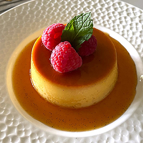
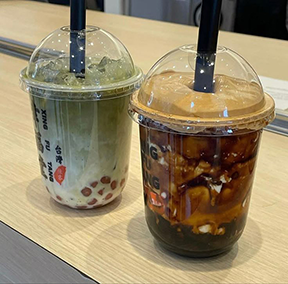
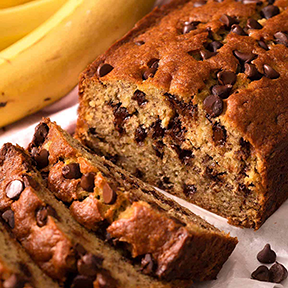
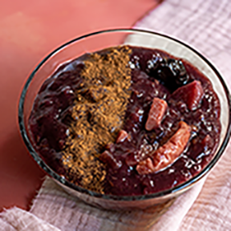

- flan 
- milk tea 
- banana bread 
- mazamorra 
- bingsu
flan is my favorite dessert :0! as someone with celiac, it is something i never had to give up. it so yummy - i am a pudding fiend
i love tea so milk tea is an instant fav. living in the bay there is so many yumlicious options and they take all my money. my favorite is probably oolong milk tea with pudding!
banana bread is probably my favorite baked dessert! it is very easy to make gf and the gf version doesn't taste that different from the regular. i love it with choco chips and walnuts!
mazamorra is a traditional dessert from peru made with purple corn! this dessert is one of my all time favs since i grew up eating it especially on special days like bdays!

bingsu is a korean shaved ice dessert with lots of different toppings! i love green tea bingsu the most